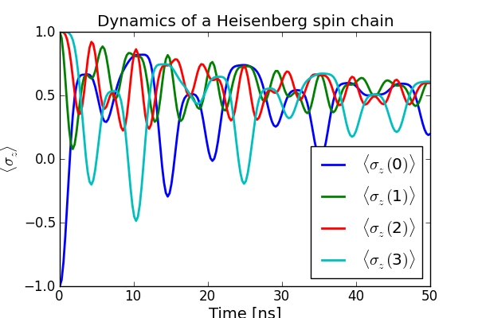

The dynamics of a Heisenberg spin chain¶
Example that calculates the dynamics of a Heisenberg spin chain.
#
# Heisenberg spin 1/2 chain
#
from qutip import *
from pylab import *
import time
def integrate(N, h, Jx, Jy, Jz, psi0, tlist, gamma, solver):
# Hamiltonian
#
# H = - 0.5 sum_n^N h_n sigma_z(n)
# - 0.5 sum_n^(N-1) [ Jx_n sigma_x(n) sigma_x(n+1) + Jy_n sigma_y(n) sigma_y(n+1) + Jz_n sigma_z(n) sigma_z(n+1)]
#
si = qeye(2)
sx = sigmax()
sy = sigmay()
sz = sigmaz()
sx_list = []
sy_list = []
sz_list = []
for n in range(N):
op_list = []
for m in range(N):
op_list.append(si)
op_list[n] = sx
sx_list.append(tensor(op_list))
op_list[n] = sy
sy_list.append(tensor(op_list))
op_list[n] = sz
sz_list.append(tensor(op_list))
# construct the hamiltonian
H = 0
# energy splitting terms
for n in range(N):
H += - 0.5 * h[n] * sz_list[n]
# interaction terms
for n in range(N-1):
H += - 0.5 * Jx[n] * sx_list[n] * sx_list[n+1]
H += - 0.5 * Jy[n] * sy_list[n] * sy_list[n+1]
H += - 0.5 * Jz[n] * sz_list[n] * sz_list[n+1]
# collapse operators
c_op_list = []
# spin dephasing
for n in range(N):
if gamma[n] > 0.0:
c_op_list.append(sqrt(gamma[n]) * sz_list[n])
# evolve and calculate expectation values
if solver == "ode":
expt_list = odesolve(H, psi0, tlist, c_op_list, sz_list)
elif solver == "mc":
ntraj = 250
expt_list = mcsolve(H, psi0, tlist, ntraj, c_op_list, sz_list)
return expt_list
#
# set up the calculation
#
solver = "ode" # use the ode solver
#solver = "mc" # use the monte-carlo solver
N = 4 # number of spins
# array of spin energy splittings and coupling strengths. here we use
# uniform parameters, but in general we don't have too
h = 1.0 * 2 * pi * ones(N)
Jz = 0.1 * 2 * pi * ones(N)
Jx = 0.1 * 2 * pi * ones(N)
Jy = 0.1 * 2 * pi * ones(N)
# dephasing rate
gamma = 0.01 * ones(N)
# intial state, first spin in state |1>, the rest in state |0>
psi_list = []
psi_list.append(basis(2,1))
for n in range(N-1):
psi_list.append(basis(2,0))
psi0 = tensor(psi_list)
tlist = linspace(0, 50, 200)
start_time = time.time()
sz_expt = integrate(N, h, Jx, Jy, Jz, psi0, tlist, gamma, solver)
print 'time elapsed = ' +str(time.time() - start_time)
#
# plot
#
fig=figure(figsize=[6,4])
for n in xrange(N):
plot(tlist, real(sz_expt[n]), label=r'$\langle\sigma_z($'+str(n)+r'$)\rangle$',lw=2)
xlabel(r'Time [ns]',fontsize=14)
ylabel(r'$\langle\sigma_{z}\rangle$',fontsize=14)
title(r'Dynamics of a Heisenberg spin chain')
legend(loc = "lower right")
savefig('examples-spinchain.png')
close(fig)
